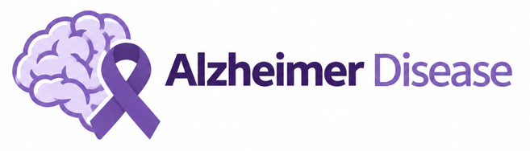

Harsh H. Khilawala
(He/Him/His)Short bio - about me!
I am a recent CS Graduate with research focus on computational neuroscience and neuroinformatics. My recent work involves studying the behavior and spiking properties of biological neuronal network models using simulation technologies such as PyNN. I graduated with MS in Computer Science from Pace University, New York, United States in May 2025 while I completed my undergraduate with B.TECH. in Computer Science and Engineering in May 2023 from Charotar University of Science and Technology (CHARUSAT), India.
Introduction
Since 2022, my academic and research journey has been driven by a deep curiosity about the human brain — its computational elegance, its adaptability, and its mysteries. During my under undergraduate studies, I got an opportunity to attend the NeuroPSI lab, CNRS - French National Centre for Scientific Research to work on a neuroinformatics project focused on simulating the spiking behavior of biological neuronal network models which at first I got too frustrated to it but with time, I discovered the immense potential of computational methods to unravel the principles of neural function. This experience marked the beginning of my passion for computational neuroscience, where biology and technology converge to help us understand the very foundation of cognition and consciousness.
One of my ultimate career goals is to contribute to the global effort to understand and combat Alzheimer’s disease. (© 2024 Springer Nature Limited. All rights reserved.) Despite being unfamiliar with the fact what actually Alzheimer’s disease is, I know of one thing for sure - This disease has taken away the lives of innumerable people across the globe but this is not the only thing it did, this same disease was responsible to break hell upon people living in their worst nightmare. Beyond its devastating medical effects, Alzheimer’s robs individuals of their memories, identities, and relationships, inflicting profound emotional pain on families and communities. This in itself is like to live with a curse. Even the smallest contribution toward alleviating this suffering would, to me, represent a meaningful step toward serving humanity through science.
Research
Research is something that excites me the most when it comes to developing a solution/product tackling the challenges in the industry/academia. To this, I would like to pursue Doctoral/PhD in Computer Science/Biomedical Data Science with research interests in Computational Neuroscience and Neuroinformatics at top programs (Stanford University being my top choice!) and hence would be applying for PhD Admissions for upcoming Fall intake cycles to a list of few universities where I would be able to pursue my ambitions. My research interests are but not limited to Computational Neuroscience, Neuroinformatics, Neuroimaging, Bio-informatics, Simulation Technologies, Computer Vision, Artificial Intelligence, Machine Learning, Medical Imaging.
Personal Details
- Personal Email: harsh.khilawala27careers@gmail.com
- LinkedIn: /harshkhilawala
- Github: HarshKhilawala
- Resume: Harsh_Khilawala [Resume]
The Big Picture
Alzheimer's Disease

Alzheimer’s disease is not simply a disorder of forgetting—it is a progressive neurodegenerative disease in which the brain gradually loses the ability to maintain the cellular connections and networks that support memory, reasoning, language, and ultimately independent behavior. During this period, abnormal amyloid plaques and tau tangles accumulate, neurons begin to lose their connections, cellular function becomes disrupted, and vulnerable brain regions—including the hippocampus and entorhinal cortex, which are central to memory—begin to deteriorate. As the disease progresses, this damage spreads to broader neural systems, eventually affecting language, reasoning, spatial processing, behavior, and the ability to perform even basic daily activities.
WHY did I choose to work upon Alzheimer’s Disease as my ultimate research goal?
- Nearly 7 Million Americans of age 65 and above are currently living with Alzheimer’s Disease.
- If we fail to act on time, the above number is expected to grow from 7 Million to 13 Million by 2050.
- 1 in 3 senior citizens die with Alzheimer's disease or another Dementia.
- Alzheimer’s disease is now the 7th leading cause of death in US!
- With a staggering growth rate of 145% in the years between 2000 to 2019.
Hobbies & Interests
Gaming 🎮
Reading 📖
Music 🎵
Movies 🎥
Coffee ☕
Gaming is one of the hobbies I enjoy in my free time, particularly because of its immersive and engaging nature. I enjoy playing a wide range of games across mobile, PC, and PlayStation platforms, exploring different genres and experiences. I am especially drawn to games that are thrilling, immersive, and capable of creating a strong sense of adventure and involvement.
Reading is another hobby that plays an important role in my personal development. I particularly enjoy reading self-improvement and personal-finance books, as I find them valuable for developing a better understanding of myself, my goals, and the way I approach both personal and professional life.
Listening to music is one of my favorite ways to relax, recharge, and create a positive atmosphere during my daily routine. I enjoy exploring different types of music depending on my mood and the moment, from energetic tracks that help me stay motivated and focused to calmer music that allows me to unwind after a busy day. Music provides a simple way for me to disconnect from everyday pressures and spend some time enjoying the moment.
Watching movies is one of my favorite ways to relax and enjoy my free time, particularly on the big screen, where the experience feels much more immersive. I have a special interest in Marvel superhero movies, enjoying their larger-than-life characters, action, visual effects, and interconnected storytelling.
Coffee is more than just a beverage for me; it is a small ritual that I genuinely enjoy as part of my daily routine. I appreciate the aroma, taste, and comforting experience of a good cup of coffee, whether it is an early-morning start to the day or a quiet break between work and research.
Copyright ©️ Harsh Khilawala. 2024-2026.